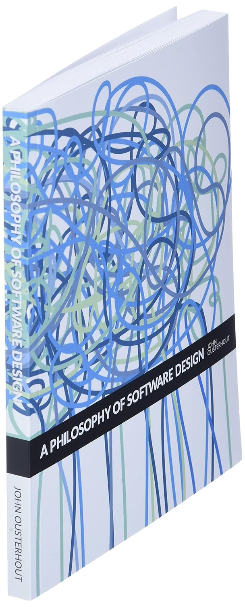

Opowieści modelarza
Rafał Pieńkowski
Opowieści modelarza
zamki, wysłannicy i współpraca
Cel prezentacji
Prolog


Rozdział 1


Rozdział 2
If you don't trust your business partner you won't share transactions with them."
PatHelland's Autonomous Computing

Rozdział 3Współpraca
Rozdział 4Wysłannicy
"An emissary is person sent on a special mission as a diplomatic representative. Unlike an ambassador, an emissary has NO authority. They can only play nicely, suck-up, and try to ease the relationship."


Epilog

"All models are wrong, but some are useful."
George E.P. Box
Link do ankietki

Link do prezentacj
Dziękuję
Linki
- Data on the Outside versus Data on the Inside
- Autonomous Computing (short version)
- Identity by Any Other Name
- Immutability Changes Everything
- Building on Quicksand
- Identity by Another Name
- Introduction to Context Mapping - Michael Plöd - DDD Europe 2022
- Context Maps - a deep dive - Michael Plöd - KanDDDinsky 2019